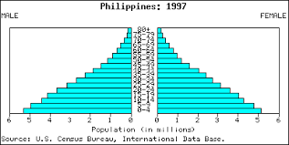
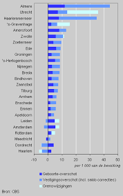

In regions with low population growth, such as many developed countries and urban centers, demographic trends reflect a delicate balance between birth rates, mortality rates, and migration patterns. Factors such as declining birth rates, increased life expectancy, and net outmigration contribute to this trend. Consequently, these areas often face challenges associated with aging populations, strained social welfare systems, and economic stagnation. Governments implement various policies to address these challenges, including incentives for childbirth, immigration programs, and investments in healthcare and social services. Maintaining a stable population level while ensuring sustainable economic growth and social well-being remains a primary focus in these regions. .
In regions experiencing high population growth, particularly in many parts of sub-Saharan Africa and South Asia, demographic dynamics are characterized by rapid increases in birth rates, limited access to family planning services, and improving healthcare leading to lower mortality rates. This demographic surge poses significant challenges, including strains on resources, heightened poverty levels, and pressure on infrastructure and services. Efforts to address these challenges involve initiatives aimed at improving access to education, healthcare, and contraception, empowering women, and promoting economic development. Stabilizing population growth in these regions is critical for achieving sustainable development goals and ensuring the well-being of present and future generations..
